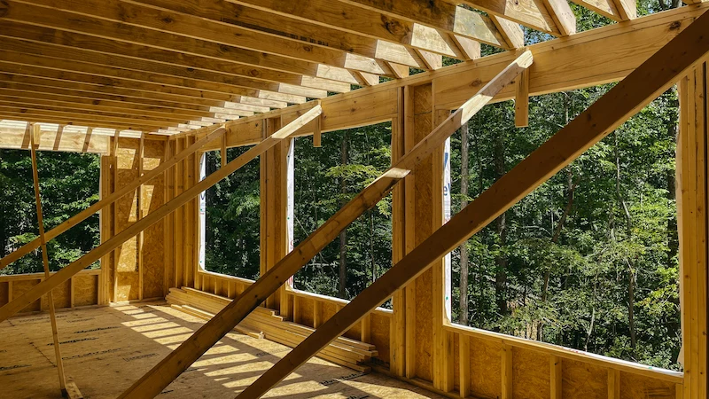
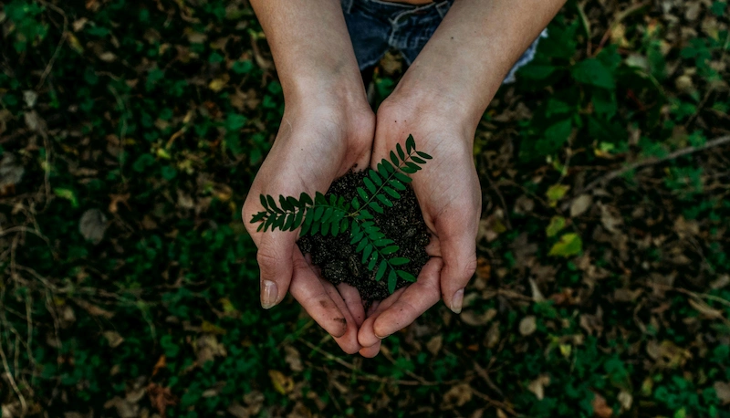
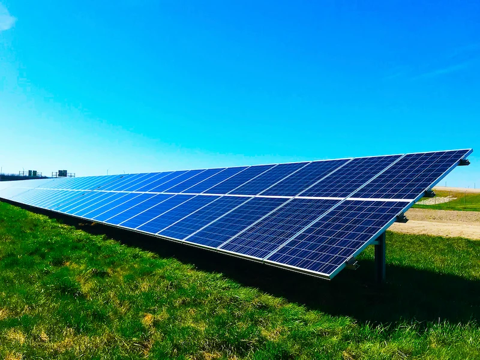

At Asplan, sustainability is not an afterthought—it is a structural imperative. We navigate the complex landscape of Biodiversity Net Gain, energy efficiency, and modern surveying to ensure your project is compliant today and valuable tomorrow. We bridge the gap between environmental responsibility and architectural luxury.

We prioritize the thermal envelope. By specifying high-performance insulation, airtightness, and passive solar gain, we reduce the need for mechanical heating before a single brick is laid. Our designs prove that energy efficiency does not require compromising on aesthetic.

Modern planning policy demands a commitment to nature. We are experts in 'Biodiversity Net Gain' (BNG), ensuring your development enhances the local ecology. From green roofs to sustainable urban drainage, we turn regulatory hurdles into design features.

The most sustainable building is the one that already exists. Our surveying team specializes in assessing existing stock for retrofit potential, utilizing lifecycle analysis to integrate heat pumps and solar technology into older properties effectively.